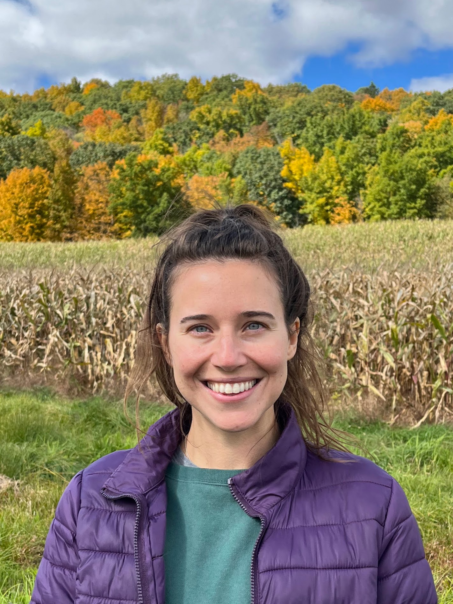

I am a PhD candidate in the Department of Atmospheric and Environmental Sciences at University at Albany and a research assistant at the Atmospheric Sciences Research Center. I obtained an M.S. in Applied Mathematics from the University of Missouri - Columbia, and I have experience working in tech, actuarial sciences, and teaching.

My research focuses on working with the NY State Department of Transportation to predict winter weather road surface conditions. The research is interdisciplinary work tying together atmospheric science, machine learning, social science, risk communication, visualizations and dashboards, and operations. This work is a part of the NSF AI Institute for Research on Trustworthy AI in Weather, Climate, and Coastal Oceanography (AI2ES).
Please feel free to contact me! Email: csutter@albany.edu